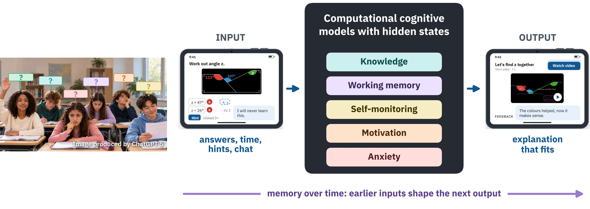
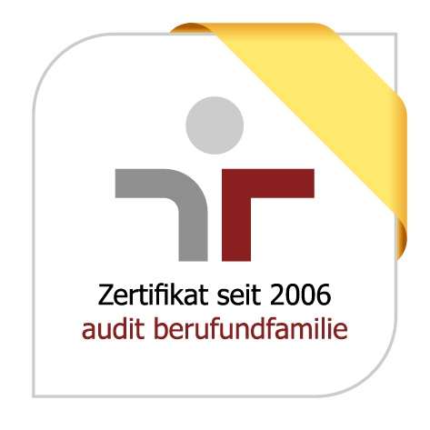

Student Assistant (HiWi): UI/UX Design and Web Development for a Maths Learning Platform
Max Planck Institute for Biological Cybernetics (MPI-BC), Tübingen · Computational Neuroscience group
Hours: 14–20 hours per week
Start: as soon as possible
End: 31 May 2027 (extension possible depending on the project’s progress)

Left: same lesson, different hidden reasons for struggling. Right: TrustEdu reads what a student does, estimates hidden learner states, and picks the maths explanation that fits.
About the project
We are building a learning platform for maths that analyses how students learn and, based on this, suggests the learning content that fits each student. At the same time, teachers can follow the progress of their students.
We need you to build the interface for this platform, a website for students and teachers that is intuitive, clearly laid out and original.
In more detail: students in the same maths lesson struggle for different reasons. One is missing knowledge, another is anxious, another does not notice their own mistakes. Our platform follows how a student solves maths tasks (answers, response times, hint use and what they write to an AI tutor), estimates these hidden learner states, and chooses the explanation, pace or visualisation that fits. We have a working prototype, and now we want to turn it into a website that students enjoy using and teachers trust.
TrustEdu is supported by Max Planck Innovation. The team is Sara Ershadmanesh (project lead; postdoc at MPI-BC) and Sascha Mühlinghaus (Master’s student researcher at MPI-BC). The project is advised by Peter Dayan (MPI-BC), Kou Murayama (University of Tübingen), Kevin Miller (Google DeepMind) and Ahmadreza Ehyaei (postdoc, Tübingen AI Center).
What you will do
Turn our prototype into a working website for students that runs in the browser on phones, tablets and laptops (Android and iPhone alike): solving maths tasks, asking the AI tutor, getting hints, videos and feedback.
Design and build a simple teacher view that shows how each student is doing and why.
Create clean screen designs and a small design system in Figma, starting from ready-made design kits.
Build the front end (for example in React), set up a simple back end and database that store student interactions (answers, response times, hint use) securely, and connect the website to our learner model through a simple interface.
Help plan and run short usability tests with students and teachers, and improve the website based on what you learn.
Roughly one third of your time goes into design and testing, and two thirds into building the website.
What we are looking for
Required skills
Enrolled in a Bachelor’s or Master’s programme in media informatics, computer science, human–computer interaction, interaction design or a related field.
Front-end development: HTML, CSS and JavaScript, and experience with React or a similar framework. You have built at least one web app yourself.
Basic back-end and database experience, for example Node.js or Python, a database such as PostgreSQL, or a service such as Supabase or Firebase.
UI/UX design: you can design clear screens for phones and tablets in Figma and turn them into a clickable prototype.
A portfolio or GitHub (student projects are fine) that shows a website or web app you designed and built.
Fluent and careful use of AI tools for coding and design: you use them to work faster, and you check and test their output.
High motivation and the ability to work independently and reliably.
Strong teamwork and communication skills: you like explaining your choices and listening to feedback from students, teachers and researchers.
Nice to have
German language, because we test the website with teachers and students in Germany. We also welcome applicants without German who are strong in the required skills.
Experience with user research and usability testing.
Awareness of data protection (GDPR).
Experience with mobile app frameworks such as React Native or Flutter.
Data visualisation, accessibility (WCAG), or an interest in education.
What we offer
A real product that will be tested with students and teachers, which you can show in your portfolio.
A friendly, interdisciplinary team at the meeting point of design, AI, cognitive science and education.
Flexible working hours and the option to work partly remotely.
Payment according to the Max Planck HiWi rates.
How to apply
Please send a short motivation letter (half a page), your CV without a picture, one example website or web app you have built (a link to its code, for example on GitHub, and a short description of the project), and the names and contact details of two referees to Sara Ershadmanesh at:
sara.ershadmanesh@tuebingen.mpg.de
Subject: “HiWi UI/UX & Web TrustEdu”
We will look at your example project before the interview. In the interview, you will present it: what it does, how you designed it and how the code works, and we will ask you questions about it. Applications are reviewed on a rolling basis until the position is filled.

The Max Planck Society is committed to increasing the number of individuals with disabilities in its workforce and therefore encourages applications from such qualified individuals. The Max Planck Society also strives to ensure gender equality and diversity.